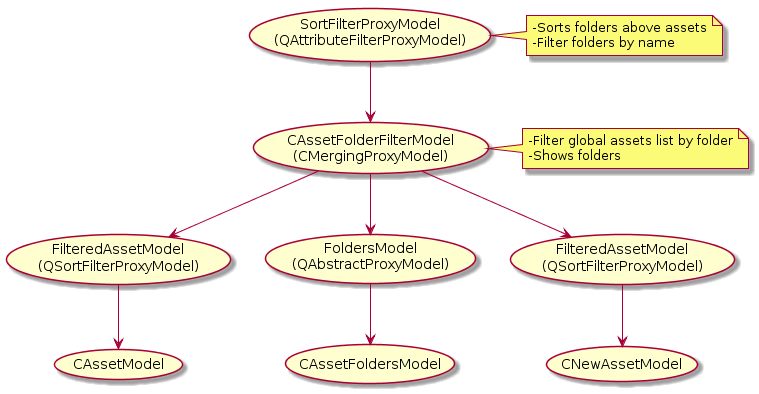

The asset browser's detail and thumbnail view use the same model of type SortFilterProxyModel. It is the root of a hierarchy of filtering models that provide filtering of assets and folders. The diagram below is a representation of the model's hierarchy as of CL 1684129, 4/26/2018.
